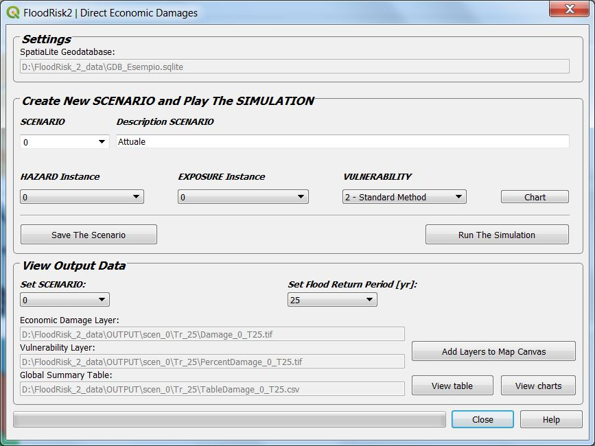

Direct Economic Damage¶
The Direct Economic Damage window allows you to asses the direct economic damage expected for the structures and for the content of the property at risk.

The figure shows the interface for the calculation
Since the plug-in allows you to have different instances of both hazard and exposure, each calculation must refer to a combination of them, which we call scenario. For example the scenario of the current situation, named “SCENARIO 0” is the combination of the “instance 0” of the hazard with the “instance 0” of the exposure. The scenario is also completely defined by the choice also of the type of vulnerability curves to be adopted for the calculation.
Since for each hazard there are data for different return periods, the plug-in recursively performs the calculation for each return period. In the lower part of the interface it is possible to individually choose the return period results to be displayed on the map.
Ultimately, having chosen a SCENARIO, the data used are the following:
Data concern assets at risk and their vulnerability (depth-damage curves) are stored in the geodatabase.
Data concern the hazard are a map of maximum depth values due to flooding (one for each return period). These data are the output from a 2D hydraulic model and are loaded into the system from any file type GDAL Raster Formats
The database can contain different types of depth-damage curves: before performing the calculation you must choose from those available and you can view the Charts.
Results are maps of damage and vulnerability to residential, commercial and industrial property and a global summary table of the results which are also displayed in graphical form (histogram).
Note
Layers of results for each return period.
- Economic Damage Layer (*_dmg.tif)
a GeoTIFF File Format having two output bands:
- band1
economic damage expected for the structures (Euro per square meter)
- band2
economic damage expected for the contents (Euro per square meter)
- Vulnerability Layer (*_vuln.tif)
a GeoTIFF File Format having two output bands:
- band1
vulnerability for the structures (% of damage)
- band2
vulnerability for the contents (% of damage)
- Global summary table (*_dmg.csv)
a csv File Format containing the table of results grouped by class of asset